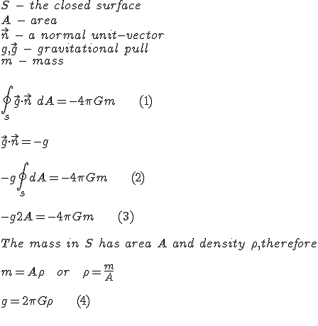

<!DOCTYPE html>
<!--[if lt IE 7]>      <html class="no-js lt-ie9 lt-ie8 lt-ie7" lang="en"> <![endif]-->
<!--[if IE 7]>         <html class="no-js lt-ie9 lt-ie8" lang="en"> <![endif]-->
<!--[if IE 8]>         <html class="no-js lt-ie9" lang="en"> <![endif]-->
<!--[if gt IE 8]><!--> <html class="no-js" lang="en"> <!--<![endif]-->

<!-- Mirrored from theflatearthsociety.org/home/index.php/blog/infinite-flat-earth-mathematics by HTTrack Website Copier/3.x [XR&CO'2014], Thu, 11 Nov 2021 00:42:06 GMT -->
<!-- Added by HTTrack --><meta http-equiv="content-type" content="text/html;charset=UTF-8" /><!-- /Added by HTTrack -->
<head>
<meta http-equiv="X-UA-Compatible" content="IE=edge,chrome=1">
<title>The Mathematics of the Infinite Flat Earth :: The Flat Earth Society</title>
<meta http-equiv="content-type" content="text/html; charset=UTF-8" />
<meta name="description" content="A brief look into some of the mathematics behind the infinite flat earth. We examine the case of the infinite plane using a Gaussian Pillbox to show its finite gravitational pull. Additionally, we look at its stability answering the question &quot;Why would a flat earth not form into a sphere?&quot;" />
<meta name="keywords" content="flat earth mathematics, infinite flat earth" />
<meta name="generator" content="concrete5 - 8.2.1" />
<link href="../../concrete/css/font-awesome.css" rel="stylesheet" type="text/css" media="all">
<script type="ffd4cb42b1c0db5a6c53882b-text/javascript" src="../../concrete/js/jquery.js"></script>
<link href="../../application/files/cache/css/6238595ad64553757a6817b51880ca4ef68fdb37.css" rel="stylesheet" type="text/css" media="all" data-source="/home/concrete/blocks/share_this_page/view.css /home/concrete/blocks/topic_list/view.css /home/concrete/blocks/page_list/view.css /home/concrete/css/conversations.css /home/concrete/css/jquery-magnific-popup.css /home/concrete/css/jquery-ui.css /home/concrete/blocks/social_links/view.css">
<meta name="viewport" content="width=device-width, initial-scale=1">
<link rel="stylesheet" href="../../packages/theme_stucco/themes/stucco/css/bootstrap-theme.min.css">
<link rel="stylesheet" href="../../packages/theme_stucco/themes/stucco/css/bootstrap.css">
<link rel="stylesheet" href="../../packages/theme_stucco/themes/stucco/css/custom.css">
<link href="../../application/files/cache/css/stucco/mainb0cb.css?ts=1612374175" rel="stylesheet" type="text/css" media="all">
<script src="../../packages/theme_stucco/themes/stucco/js/vendor/modernizr-2.8.3-respond-1.4.2.min.9.delaye" type="ffd4cb42b1c0db5a6c53882b-text/javascript"></script>
</head>
<body class="infinite-flat-earth-mathematics">
<div class="ccm-page page-type-blog-entry page-template-right-sidebar">
<!--[if lt IE 8]>
            <p class="browserupgrade">You are using an <strong>outdated</strong> browser. Please <a href="http://browsehappy.com/">upgrade your browser</a> to improve your experience.</p>
        <![endif]-->
<a class="skip-link screen-reader-text" href="#main-content">Skip to content</a>
<div class="global-navi">
<div class="container">
<div class="row no-gutter">
<div class="global-navi-wrapper">
<nav class="animenu" role="navigation">
<div class="button-wrapper">
<button class="animenu__toggle">
<span class="animenu__toggle__bar"></span>
<span class="animenu__toggle__bar"></span>
<span class="animenu__toggle__bar"></span>
</button>
</div>
<ul class="animenu__nav"><li class=""><a href="../../index.html" target="_self" class="">Home</a></li><li class=""><a href="../about-the-society.html" target="_self" class="">About</a><ul class="animenu__nav__child"><li class=""><a href="../about-the-society/team.html" target="_self" class="">Team</a></li><li class=""><a href="../about-the-society/membership-register.html" target="_self" class="">Membership Register</a></li><li class=""><a href="../about-the-society/fes-press.html" target="_self" class="">Press</a></li><li class=""><a href="../about-the-society/contact-us.html" target="_self" class="">Contact</a></li><li class=""><a href="../about-the-society/joining-the-society.html" target="_self" class="">Joining The Society</a></li><li class=""><a href="../about-the-society/faq.html" target="_self" class="">FAQ</a></li><li class=""><a href="../about-the-society/the-flat-earth-society-logo.html" target="_self" class="">The Flat Earth Society Logo</a></li></ul></li><li class=""><a href="../library.html" target="_self" class="">Library</a><ul class="animenu__nav__child"><li class=""><a href="../flat-earth-library/library-books.html" target="_self" class="">Books</a></li><li class=""><a href="../flat-earth-library/pamphlets-and-journals.html" target="_self" class="">Pamphlets And Journals</a></li><li class=""><a href="../flat-earth-library/letters-and-notes.html" target="_self" class="">Letters &amp; Notes</a></li><li class=""><a href="../flat-earth-library/newsletters.html" target="_self" class="">Newsletters</a></li><li class=""><a href="../flat-earth-library/newspapers-and-magazines.html" target="_self" class="">Newspapers and Magazines</a></li><li class=""><a href="../flat-earth-library/press-releases-and-promotional.html" target="_self" class="">Press Releases and Promotionals</a></li><li class=""><a href="../flat-earth-library/web-articles.html" target="_self" class="">Web Articles</a></li></ul></li><li class=""><a href="https://theflatearthsociety.org/forum" target="_self" class="">Forums</a></li><li class="nav-path-selected"><a href="../blog.html" target="_self" class="nav-path-selected">Blog</a><ul class="animenu__nav__child"><li class="nav-selected nav-path-selected"><a href="infinite-flat-earth-mathematics.html" target="_self" class="nav-selected nav-path-selected">The Mathematics of the Infinite Flat Earth</a></li><li class=""><a href="einsteins-relativity-proves-earth-flat.html" target="_self" class="">Einstein&#039;s Relativity Proves The Earth is Flat</a></li><li class=""><a href="bob-bobby-ray-simmons-jr-flat-earth-society.html" target="_self" class="">The Flat Earth Society Welcomes B.o.B</a></li><li class=""><a href="flat-earth-clues-mark-sargent.html" target="_self" class="">Flat Earth Clues: Exclusive Interview with Mark Sargent</a></li><li class=""><a href="early-flat-earth-theory.html" target="_self" class="">Early Parallaxian Theory In a Nutshell</a></li><li class=""><a href="lunar-eclipses-and-shadow-earth.html" target="_self" class="">Lunar Eclipses and the Shadow of the Earth</a></li></ul></li><li class=""><a href="../featured.html" target="_self" class="">Featured Articles</a><ul class="animenu__nav__child"><li class=""><a href="../featured/podcast.html" target="_self" class="">Podcast</a></li><li class=""><a href="../featured/maps.html" target="_self" class="">Maps</a></li><li class=""><a href="../featured/Flat-Earth-Historical-Figures-People.html" target="_self" class="">Historical Figures and People</a></li><li class=""><a href="../featured/the-why-and-because.html" target="_self" class="">Lady Blount&#039;s The &#039;Why&#039; And &#039;Because&#039;</a></li><li class=""><a href="../featured/mythology-and-religion.html" target="_self" class="">Mythology and Religion</a></li><li class=""><a href="../featured/popular-culture.html" target="_self" class="">Popular Culture</a></li><li class=""><a href="../featured/shenton-archives-lecture-notes.html" target="_self" class="">Shenton Archives - Lecture Posters</a></li><li class=""><a href="../featured/religious-references.html" target="_self" class="">Religious References</a></li></ul></li></ul> </nav>
</div>
</div>
</div>
</div>

<div id="header-content" class="header-container header-not-home">
<header class="header-content-inner clearfix" role="banner" style="background:transparent;">
<div class="header-logo col-xs-9 col-sm-6 col-md-6">
<div class="ccm-custom-style-container ccm-custom-style-main-1557 text-white">
<p><a href="../../index.html">The Flat Earth Society</a> </p>
</div>
</div>
<div class="header-conctens col-sm-6 col-md-6">
<div class="row">
<div class="header-navi clearfix">
<div class="ccm-custom-style-container ccm-custom-style-main-1560 stucco-header-navi">
<p style="text-align: right;"><a href="https://facebook.com/FlatEarthToday" target="_blank"><i class="fa fa-facebook-square" aria-hidden="true"> Facebook </i></a> <a href="https://twitter.com/FlatEarthToday" target="_blank"><i class="fa fa-twitter" aria-hidden="true"> Twitter </i></a> <a href="https://pinterest.com/FlatEarthToday" target="_blank"><i class="fa fa-pinterest" aria-hidden="true"> Pinterest </i></a> <a href="https://flickr.com/FlatEarthToday" target="_blank"><i class="fa fa-flickr" aria-hidden="true"> flickr </i> </a>
</p>
</div>
</div>
<div class="header-search clearfix">
<div class="search-container" role="search">
<form action="https://theflatearthsociety.org/home/index.php/search" method="get" class="ccm-search-block-form">
<div class="search-inner clearfix">
<h3>Search</h3>
<input name="search_paths[]" type="hidden" value="" />
<input name="query" type="text" value="" class="search-input" />
<div class="search-btn-inner clearfix">
<input name="submit" type="submit" value="Go!" class="search-submit" /><i class="fa fa-search"></i>
</div>
</div>
</form></div>
</div>
</div>
</div>
</header>

<div class="global-navi">
<div class="container">
<div class="row no-gutter">
<div class="global-navi-wrapper">
<nav class="animenu" role="navigation">
<div class="button-wrapper">
<button class="animenu__toggle">
<span class="animenu__toggle__bar"></span>
<span class="animenu__toggle__bar"></span>
<span class="animenu__toggle__bar"></span>
</button>
</div>
<ul class="animenu__nav"><li class=""><a href="../../index-2.html" target="_self" class="">Home</a></li><li class=""><a href="../about-the-society.html" target="_self" class="">About</a><ul class="animenu__nav__child"><li class=""><a href="../about-the-society/team.html" target="_self" class="">Team</a></li><li class=""><a href="../about-the-society/membership-register.html" target="_self" class="">Membership Register</a></li><li class=""><a href="../about-the-society/fes-press.html" target="_self" class="">Press</a></li><li class=""><a href="../about-the-society/contact-us.html" target="_self" class="">Contact</a></li><li class=""><a href="../about-the-society/joining-the-society.html" target="_self" class="">Joining The Society</a></li><li class=""><a href="../about-the-society/faq.html" target="_self" class="">FAQ</a></li><li class=""><a href="../about-the-society/the-flat-earth-society-logo.html" target="_self" class="">The Flat Earth Society Logo</a></li></ul></li><li class=""><a href="../library.html" target="_self" class="">Library</a><ul class="animenu__nav__child"><li class=""><a href="../flat-earth-library/library-books.html" target="_self" class="">Books</a></li><li class=""><a href="../flat-earth-library/pamphlets-and-journals.html" target="_self" class="">Pamphlets And Journals</a></li><li class=""><a href="../flat-earth-library/letters-and-notes.html" target="_self" class="">Letters &amp; Notes</a></li><li class=""><a href="../flat-earth-library/newsletters.html" target="_self" class="">Newsletters</a></li><li class=""><a href="../flat-earth-library/newspapers-and-magazines.html" target="_self" class="">Newspapers and Magazines</a></li><li class=""><a href="../flat-earth-library/press-releases-and-promotional.html" target="_self" class="">Press Releases and Promotionals</a></li><li class=""><a href="../flat-earth-library/web-articles.html" target="_self" class="">Web Articles</a></li></ul></li><li class=""><a href="https://theflatearthsociety.org/forum" target="_self" class="">Forums</a></li><li class="nav-path-selected"><a href="../blog.html" target="_self" class="nav-path-selected">Blog</a><ul class="animenu__nav__child"><li class="nav-selected nav-path-selected"><a href="infinite-flat-earth-mathematics.html" target="_self" class="nav-selected nav-path-selected">The Mathematics of the Infinite Flat Earth</a></li><li class=""><a href="einsteins-relativity-proves-earth-flat.html" target="_self" class="">Einstein&#039;s Relativity Proves The Earth is Flat</a></li><li class=""><a href="bob-bobby-ray-simmons-jr-flat-earth-society.html" target="_self" class="">The Flat Earth Society Welcomes B.o.B</a></li><li class=""><a href="flat-earth-clues-mark-sargent.html" target="_self" class="">Flat Earth Clues: Exclusive Interview with Mark Sargent</a></li><li class=""><a href="early-flat-earth-theory.html" target="_self" class="">Early Parallaxian Theory In a Nutshell</a></li><li class=""><a href="lunar-eclipses-and-shadow-earth.html" target="_self" class="">Lunar Eclipses and the Shadow of the Earth</a></li></ul></li><li class=""><a href="../featured.html" target="_self" class="">Featured Articles</a><ul class="animenu__nav__child"><li class=""><a href="../featured/podcast.html" target="_self" class="">Podcast</a></li><li class=""><a href="../featured/maps.html" target="_self" class="">Maps</a></li><li class=""><a href="../featured/Flat-Earth-Historical-Figures-People.html" target="_self" class="">Historical Figures and People</a></li><li class=""><a href="../featured/the-why-and-because.html" target="_self" class="">Lady Blount&#039;s The &#039;Why&#039; And &#039;Because&#039;</a></li><li class=""><a href="../featured/mythology-and-religion.html" target="_self" class="">Mythology and Religion</a></li><li class=""><a href="../featured/popular-culture.html" target="_self" class="">Popular Culture</a></li><li class=""><a href="../featured/shenton-archives-lecture-notes.html" target="_self" class="">Shenton Archives - Lecture Posters</a></li><li class=""><a href="../featured/religious-references.html" target="_self" class="">Religious References</a></li></ul></li></ul> </nav>
</div>
</div>
</div>
</div>
</div>

<div id="main-content" class="main-container">
<div class="main-content-inner clearfix">
<div class="container">
<div class="row">
<div id="primary" class="content-primary col-md-8">
<main role="main">
<article>
<div class="ccm-block-page-title-byline">
<h1 class="page-title">The Mathematics of the Infinite Flat Earth</h1>
<span class="page-date">
May 16, 2016 </span>
<span class="page-author">
JohnDavis </span>
</div>
<picture><!--[if IE 9]><video style='display: none;'><![endif]--><source srcset="/home/application/files/thumbnails/large/9314/6126/7140/math.jpg" media="(min-width: 900px)"><source srcset="/home/application/files/thumbnails/medium/9314/6126/7140/math.jpg" media="(min-width: 768px)"><source srcset="../../application/files/thumbnails/small/9314/6126/7140/math.jpg"><!--[if IE 9]></video><![endif]--></picture>
<p>Today we will be talking about how to use Gauss's Law to show that an infinite plane would have a finite gravitational pull. Now if you were to ask somebody how much gravitational pull an infinite amount of mass would exert, the common sense answer would be "infinite!" However, upon inspection we can see that certain configurations of mass would actually yield finite gravitational pulls.<br><br>This article requires an understanding of surface integrals and so likely the math will be beyond many. However, I will do my best to explain it in the simplest terms possible. If you come across some math you don't understand, do like I do and continue reading past it. You can later go back with what you learned and likely will have a better understanding about it.</p><p>First we will introduce a symbol that likely has hidden itself from many of our readers educations. This is to no shame though, I've met Ph.Ds who were not familiar with this! One astrophysicist, working on her PhD dissertation, went so far as to proclaim "Fake Math!" I have to admit, that one made me chuckle a bit to myself. It must be remembered that no one can possibly hope to know everything, especially when we seek to specialize. </p><p>This curious symbol looks like one you may have seen before, but it acts somewhat differently. You may be familiar with the integral, with which it shares many properties: ∫. Ignoring the terse mathematical definition, we will use a somewhat easy to understand one. Leibniz, its creator, thought of it as an infinite sum of infinitesimal summands. So, taking the integral over a small portion of a line, you can find the sum of its area above or below the curve by looking at the sum of infinitely small slices of it and adding it all up.</p><p>The symbol you may be less familiar with is that of the closed surface integral ∮<span class="redactor-invisible-space">. The difference here visually of course is the introduction of that circle in the middle. Think of it roughly as a generalization of the integral over a surface instead. So instead of infinitely small slices, you will be dealing with infinitely small surfaces!<br><br>The second key to the puzzle we will need to use to properly examine the gravitational affect of an infinite plane is Gauss's law. Usually used in electromagnetism, Gauss's law actually applies to gravitational forces as well since they both share an inverse square relationship 1/distance2 to their strength. It can be stated as follows:</span></p><p>∮<strong>g</strong>•<strong>n</strong> dA = -4<strong>π</strong>Gm</p><p>Lets say we have some mass m. We pretend to create a surface around the mass. We divide this surface up into infinitesimal parts, each with an area of dA. Remember that the integral is summing up an infinite amount of infinitesimal surfaces? We take the infinitesimal bits of the area (dA) and sum them over the entire closed surface. Each infinitesimal "bit" has an <strong>n</strong>. <strong>n</strong> is a unit vector that is perpendicular, so facing away from the surface at a right angle away. You might want to visualize that <strong>n</strong> represents "up" since we are dealing with a plane. <strong>g</strong> is the acceleration due to gravity, pointing towards the mass. In our case, this should be "down."</p><p>We can use this to examine the gravitational influences of any body. If we were looking at point mass, we would use a sphere. If we were looking at an infinite plane, as we are, we will use a pillbox for our surface.<br></p><p><span class="redactor-invisible-space">When we look at the pillbox, we can simplify things nicely. We see the curved surface of the pillbox will "cancel out" its own gravitational influence and contribute nothing. A simple way to think of this is that each point on the cylinder is counterbalanced with another point on the cylinder. This coincidently also shows the infinite plane is a stable body as each point on the plane itself is also counter-balanced by the points around it horizontally, thus answering the common question "Why wouldn't mass form into a sphere?" A more accurate way would be to realize this is that </span><strong>g</strong> is at a right angle<em> </em>to our "up" ( <strong>n</strong> ) at all points; all points have an opposite point that is facing the opposite direction as well, and so <strong>g•n</strong> = 0. </p><p>We are almost there - this leaves us with only the circle caps to deal with. </p><p>Looking at the caps we realize that g and n are parallel and opposite each other and so we realize <strong>g</strong>•<strong>n</strong> = -g. This leaves the surface integral of just the pillbox ends. Since we have 2 of them and the integral is the sum of the parts of dA, we have -g∮dA = g2A leaving our equation as: -g 2A = -4<strong>π</strong>Gm. From there its easy to see g's value is finite - g= 2<strong>π</strong>Gm / A. This is further realized by noting mass = (density * Area), giving us g A= 2<strong>π</strong>GpA, or<span class="redactor-invisible-space"> g = 2<strong>π</strong>G p. <span class="redactor-invisible-space"></span> This is</span> clearly a finite value. If we wished we could continue from here to calculate the depth of the plane using the average density of Earth.</p><p>Given it also has depth we are looking at the case of m = (density * Area * depth). This gives us instead g = 2<strong>π</strong>G p d, where d is depth. </p><p>g = 9.81 m/s/s<br>G = 6.754×10<sup>−11</sup> m<sup>3</sup> kg<sup>−1</sup> s<sup>−2</sup><br>p = 5.51 g/cm³<span class="redactor-invisible-space"> , the average density of earth</span></p><p><span class="redactor-invisible-space">Giving us d = g / (2<strong>π</strong>G p<span class="redactor-invisible-space">). This evaluates to around 4 195.43 kilometers deep, thus showing false my early hypothesis of 9000 km deep.</span></span></p><p><strong>Sources and Related Reading:</strong><br><a href="https://news.bbc.co.uk/2/hi/uk_news/magazine/7540427.stm" target="_blank">BBC Do They Really Believe The Earth is Flat?</a><br><a href="https://scienceworld.wolfram.com/physics/BouguerGravity.html" target="_blank">Wolfram Math: Bougher Gravity</a><br><a href="https://www.pgccphy.net/ref/gravity.pdf">Gauss’s Law for Gravity, D.G. Simpson, Ph.D., December 6, 2006</a></p>
</article>
</main>
</div>
<div id="secondary" class="content-secondary col-md-4" role="complementary">
<aside class="">
<div class="ccm-custom-style-container ccm-custom-style-sidebar-12 block-sidebar-wrapped">
<div class="ccm-block-share-this-page">
<ul class="list-inline">
<li>
<a href="https://www.facebook.com/sharer/sharer.php?u=https%3A%2F%2Fwww.theflatearthsociety.org%2Fhome%2Findex.php%2Fblog%2Finfinite-flat-earth-mathematics%2Ftopic%2F32%2Ftheory" target="_blank" aria-label="Facebook"><i class="fa fa-facebook"></i></a>
</li>
<li>
<a href="https://twitter.com/intent/tweet?url=https%3A%2F%2Fwww.theflatearthsociety.org%2Fhome%2Findex.php%2Fblog%2Finfinite-flat-earth-mathematics%2Ftopic%2F32%2Ftheory" target="_blank" aria-label="Twitter"><i class="fa fa-twitter"></i></a>
</li>
<li>
<a href="https://www.linkedin.com/shareArticle?mini-true&amp;url=https%3A%2F%2Fwww.theflatearthsociety.org%2Fhome%2Findex.php%2Fblog%2Finfinite-flat-earth-mathematics%2Ftopic%2F32%2Ftheory&amp;title=The+Mathematics+of+the+Infinite+Flat+Earth" target="_blank" aria-label="LinkedIn"><i class="fa fa-linkedin-square"></i></a>
</li>
<li>
<a href="https://theflatearthsociety.org/cdn-cgi/l/email-protection#c4fba6aba0bdf987aca1a7afe1f6f4abb1b0e1f6f4b0acadb7e1f6f4a5b6b0ada7a8a1e1f6f4abaae1f6f490aca1e1f6f482a8a5b0e1f6f481a5b6b0ace1f6f497aba7ada1b0bde1f785e1f485e1f48590aca1e1f6f489a5b0aca1a9a5b0ada7b7e1f6f4aba2e1f6f4b0aca1e1f6f48daaa2adaaadb0a1e1f6f482a8a5b0e1f6f481a5b6b0ace1f485acb0b0b4b7e1f785e1f682e1f682b3b3b3eab0aca1a2a8a5b0a1a5b6b0acb7aba7ada1b0bdeaabb6a3e1f682acaba9a1e1f682adaaa0a1bceab4acb4e1f682a6a8aba3e1f682adaaa2adaaadb0a1e9a2a8a5b0e9a1a5b6b0ace9a9a5b0aca1a9a5b0ada7b7e1f682b0abb4ada7e1f682f7f6e1f682b0aca1abb6bde2a5a9b4ffb7b1a6aea1a7b0f990acabb1a3acb0e1f6f4bdabb1e1f6f3a0e1f6f4a1aaaeabbde1f6f4b0acadb7e1f6f4a5b6b0ada7a8a1ea" target="_blank" aria-label="Email"><i class="fa fa-envelope"></i></a>
</li>
</ul>
</div>
</div>
<div class="ccm-custom-style-container ccm-custom-style-sidebar-11 block-sidebar-wrapped">
<div class="ccm-block-next-previous-wrapper">
<div class="ccm-block-next-previous-header">
<h5>Next Post</h5>
</div>
<p class="ccm-block-next-previous-next-link">
<a href="einsteins-relativity-proves-earth-flat.html">Einstein's Relativity Proves The Earth is Flat</a> </p>
</div>
</div>
<div class="ccm-block-topic-list-wrapper">
<div class="ccm-block-topic-list-header">
<h5>Topics</h5>
</div>
No topics.
</div>
<div class="ccm-block-page-list-wrapper">
<div class="ccm-block-page-list-header">
<h5>Related Posts</h5>
</div>
<div class="ccm-block-page-list-pages">
<div class="ccm-block-page-list-page-entry">
<div class="ccm-block-page-list-page-entry-text">
<div class="ccm-block-page-list-title">
<a href="early-flat-earth-theory.html" target="_self">Early Parallaxian Theory In a Nutshell</a>
</div>
</div>
</div>
<div class="ccm-block-page-list-page-entry">
<div class="ccm-block-page-list-page-entry-text">
<div class="ccm-block-page-list-title">
<a href="flat-earth-clues-mark-sargent.html" target="_self">Flat Earth Clues: Exclusive Interview with Mark Sargent</a>
</div>
</div>
</div>
<div class="ccm-block-page-list-page-entry">
<div class="ccm-block-page-list-page-entry-text">
<div class="ccm-block-page-list-title">
<a href="infinite-flat-earth-mathematics.html" target="_self">The Mathematics of the Infinite Flat Earth</a>
</div>
</div>
</div>
</div>
</div>
<div class="ccm-block-topic-list-wrapper">
<div class="ccm-block-topic-list-header">
<h5>All Topics</h5>
</div>
<ul class="ccm-block-topic-list-list"><li><a href="https://www.theflatearthsociety.org/home/index.php/blog/infinite-flat-earth-mathematics/topic/20/history">History</a></li> </li>
<li><a href="https://www.theflatearthsociety.org/home/index.php/blog/infinite-flat-earth-mathematics/topic/22/religion">Religion</a></li> </li>
<li><a href="https://www.theflatearthsociety.org/home/index.php/blog/infinite-flat-earth-mathematics/topic/23/popular culture">Popular Culture</a></li> </li>
<li><a href="https://www.theflatearthsociety.org/home/index.php/blog/infinite-flat-earth-mathematics/topic/24/news">News</a></li> </li>
<li><a href="https://www.theflatearthsociety.org/home/index.php/blog/infinite-flat-earth-mathematics/topic/26/announcements">Announcements</a></li> </li>
<li><a href="https://www.theflatearthsociety.org/home/index.php/blog/infinite-flat-earth-mathematics/topic/32/theory" class="ccm-block-topic-list-topic-selected">Theory</a></li> </li>
<li><a href="https://www.theflatearthsociety.org/home/index.php/blog/infinite-flat-earth-mathematics/topic/31/interviews">Interviews</a></li> </li>
</ul>
</div>
</aside>
</div>
</div>
</div>
<hr />
<div class="container"><div class="row"><div class="col-sm-12"> <div class="ccm-conversation-wrapper" data-conversation-id="6">
Loading Conversation <i class="fa fa-spin fa-circle-o-notch"></i>
</div>
<script data-cfasync="false" src="../../../cdn-cgi/scripts/5c5dd728/cloudflare-static/email-decode.min.js"></script><script type="ffd4cb42b1c0db5a6c53882b-text/javascript">
    $(function() {
        $('div[data-conversation-id=6]').concreteConversation({
            cnvID: 6,
            blockID: 1433,
            cID: 201,
            posttoken: '1636584033:288806ef49861c843482a26ea7be3dbc',
            displayMode: 'threaded',
            addMessageLabel: 'Add Message',
            paginate: true,
            itemsPerPage: 50,
            orderBy: 'date_asc',
            enableOrdering: 0,
            displayPostingForm: 'top',
            activeUsers: ["admin","johndavis"],
            enableCommentRating: 1,
            commentRatingUserID: 0,
            commentRatingIP: '9d372741',
            dateFormat: 'default',
            customDateFormat: '',
            blockAreaHandle: 'Page Footer',
            fileExtensions: 'jpg,gif,jpeg,png,doc,docx,zip',
            maxFileSize: '1',
            maxFiles: '3',
            attachmentsEnabled: '1',
            attachmentOverridesEnabled: '0',
            enableTopCommentReviews: "0"        });
    });
    </script>
</div></div></div>
</div>
</div>

<div class="footer-container">
<footer class="footer-content-inner" role="contentinfo">
<div class="container">
<div class="row">

<div class="footer-nav col-sm-6">
<p><a href="../about-the-society/faq.html">FAQ / Help</a></p><p><a href="../featured.html">Featured Articles</a></p><p><a href="../blog.html">Blog</a></p><p><a href="../about-the-society/contact-us.html">Contact Us</a></p>
</div>

<div class="social-button col-sm-6">
<nav>
<div id="ccm-block-social-links47" class="ccm-block-social-links">
<ul class="list-inline">
<li><a target="_blank" href="https://twitter.com/flatearthtoday"><i class="fa fa-twitter"></i></a></li>
<li><a target="_blank" href="https://facebook.com/flatearthtoday"><i class="fa fa-facebook"></i></a></li>
</ul>
</div>
</nav>
</div>
<div class="copyright col-sm-12">
<p>All Content Copyright 2016 The Flat Earth Society™<br></p>
</div>
<div id="scroll-page-top">
<a href="#container" class="top">Back to Top</a>
</div>
</div>
</div>
</footer>
</div>
</div>
<script type="ffd4cb42b1c0db5a6c53882b-text/javascript" src="../../application/files/cache/js/b200316aa0566238a3028ca79d8630c42f0a1747.js" data-source="/home/concrete/js/bootstrap/tooltip.js /home/concrete/js/picturefill.js /home/packages/theme_stucco/blocks/autonav/templates/stucco_global_nav_animenu/view.js"></script>
<script type="ffd4cb42b1c0db5a6c53882b-text/javascript" src="../../concrete/js/jquery-ui.js"></script>
<script type="ffd4cb42b1c0db5a6c53882b-text/javascript" src="../../application/files/cache/js/a213e08d64ddfbcb70332aa658826e83d2f7490c.js" data-source="/home/index.php/ccm/assets/localization/jquery/ui/js /home/concrete/js/underscore.js /home/concrete/js/jquery-magnific-popup.js /home/concrete/js/dropzone.js /home/index.php/ccm/assets/localization/dropzone/js /home/concrete/js/bootstrap/dropdown.js /home/concrete/js/events.js /home/concrete/js/conversations.js /home/index.php/ccm/assets/localization/conversations/js /home/concrete/js/lightbox.js"></script>
<script src="../../packages/theme_stucco/themes/stucco/js/main.js" type="ffd4cb42b1c0db5a6c53882b-text/javascript"></script>
<script src="../../../cdn-cgi/scripts/7d0fa10a/cloudflare-static/rocket-loader.min.js" data-cf-settings="ffd4cb42b1c0db5a6c53882b-|49" defer=""></script></body>

<!-- Mirrored from theflatearthsociety.org/home/index.php/blog/infinite-flat-earth-mathematics by HTTrack Website Copier/3.x [XR&CO'2014], Thu, 11 Nov 2021 00:42:07 GMT -->
</html>
